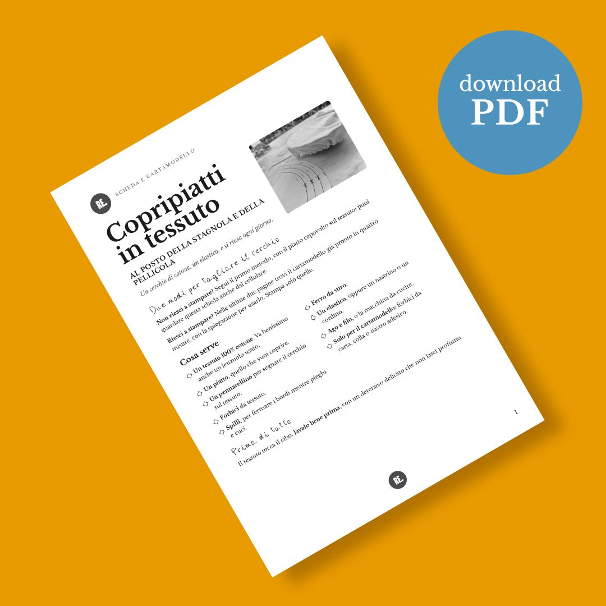
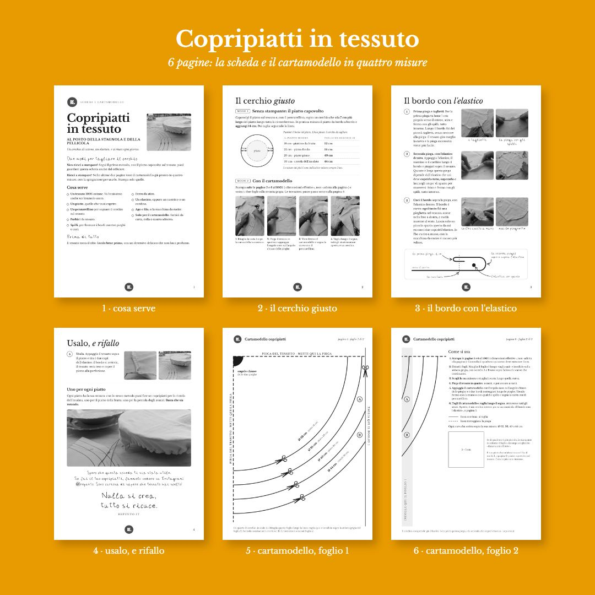

Copripiatti in tessuto, al posto della stagnola
Un cerchio di cotone e un elastico. La stagnola e la pellicola si usano una volta e si buttano: il copripiatti si lava e torna sul piatto, ogni giorno. Basta un tessuto 100% cotone, va benissimo anche un lenzuolo usato.
PDF di 6 pagine A4 con le foto a colori · si scarica subito dopo il pagamento

Tutto sul tavolo mentre cuci
La scheda serve per avere davanti le misure giuste, ogni passaggio in foto e il cartamodello già pronto.
- Le foto di ogni passaggio, dal cerchio al bordo con l'elastico
- Due modi per tagliare il cerchio: con il piatto capovolto sul tessuto, senza stampare niente, oppure con il cartamodello
- Il cartamodello in scala 1:1 in quattro misure (Ø 32, 36, 40 e 44 cm), per piattino da frutta, piatto fondo, piatto piano e ciotola dell'insalata
- La tabella per farne uno per ogni piatto di casa
Le prime quattro pagine si leggono anche dal telefono, le ultime due sono il cartamodello da stampare.

Guarda come si fa su YouTube
Il video con tutti i passaggi è gratis per tutti, sul canale di Repunto. La scheda è per chi vuole le misure e il cartamodello sotto mano.
Guarda il tutorial del copripiatti →
Che tessuto serve?
Un tessuto 100% cotone: va benissimo un lenzuolo usato. Prima di cominciare lavalo bene, con un detersivo che non lasci profumo, perché tocca il cibo.
Serve la macchina da cucire?
Si può fare anche a mano, con ago e filo: sono due pieghe e una cucitura dritta lungo il bordo.
Come ricevo la scheda?
Dopo il pagamento si apre la pagina con il pulsante per scaricare il PDF, e ti arriva un'email con lo stesso link, valido 30 giorni.